Recettes¶
Suivez avec le menu « Recettes », les mouvements financiers entrants et vos clients ainsi que tous les éléments qui gravitent autour d’eux, tels que les contrats, devis, factures, catalogues…
Devis client¶
Un devis est une estimation de proposition envoyée au client pour obtenir son approbation sur ce qui doit être fait et ce qu’il devra payer.
Sur le formulaire de devis, vous pouvez enregistrer toutes les informations sur la proposition envoyée, y compris en joignant un fichier décrivant complètement la proposition avec les détails des conditions générales.
Un devis peut être copié en commande lorsque le document correspondant est reçu en tant qu’accord client.
Les lignes de facture permettent de détailler le devis.
Astuce
Le champ client est automatiquement renseigné si le projet sélectionné sur le devis est lié à un client.
Commandes client¶
Une commande (aussi appelée ordre) est le déclencheur pour commencer le travail.
Sur le formulaire de commande, vous pouvez enregistrer toutes les informations de la commande reçue.
Travail planifié et coût budgété du projet
Le travail planifié (champ : « travail validé ») du projet sera initialisé avec la somme du travail total de toutes les commandes.
Le coût budgété (champ : « coût validé ») du projet sera initialisé avec la somme du montant total hors taxes de toutes les commandes.
Voir aussi
Astuce
Le champ client est automatiquement renseigné si le projet sélectionné sur le devis est lié à un client.
Comportement des champs
HT : Montant hors taxes : la valeur de la colonne est automatiquement mise à jour avec la somme des montants des lignes de facture.
Taxe : Taxe applicable. Si la taxe applicable n’est pas définie, la taxe définie pour le client sélectionné est utilisée.
TTC : Montant toutes taxes comprises.
Travail : Jours de travail correspondant à la commande. La valeur de la colonne est automatiquement mise à jour avec la somme des quantités des lignes de facture.
Les valeurs des colonnes « HT » et « Travail » sont automatiquement mises à jour avec la somme des lignes de facture avec les cases à cocher d’avenant sélectionnées.
Avertissement
Type d’activité : l’activité ne doit être créée qu’après approbation.
Conditions de facturation client¶
Un terme est un déclencheur planifié pour la facturation.
Vous pouvez définir autant de termes que vous le souhaitez pour définir le calendrier de facturation.
Note
Les termes sont obligatoires pour facturer un projet « Prix fixe ».
Un terme ne peut être utilisé qu’une seule fois. Le nom de la facture sera affiché.
Un terme a des déclencheurs
Vous pouvez lier les activités qui doivent être facturées à ce terme.
Un résumé des activités est affiché pour le montant validé et planifié et la date de fin.
Les valeurs validées et planifiées jouent le rôle de rappel.
Vous pouvez utiliser ces valeurs pour définir le montant réel et la date.
Astuce
Champs Montant et Date (Planifié et Validé)
Lorsqu’un déclencheur est saisi, les valeurs planifiées et validées sont automatiquement mises à jour avec la somme et le maximum des montants déclenchés.
Cliquez sur
 pour ajouter un déclencheur d’élément.
pour ajouter un déclencheur d’élément.Cliquez sur
 pour supprimer un déclencheur d’élément.
pour supprimer un déclencheur d’élément.
Factures client¶
Une facture est une demande de paiement pour le travail livré.
La facturation dépendra du type de facture défini pour le projet via le type de projet.
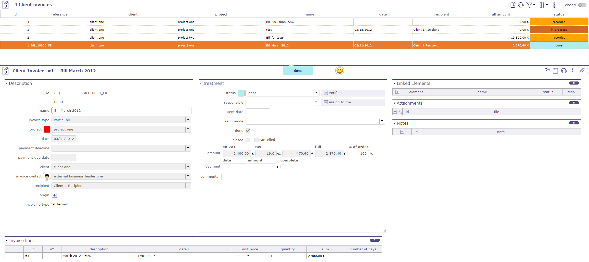
Factures clients¶
Attention
ProjeQtOr est compatible avec Factur-X depuis la version 14.5. Vous pouvez importer ou exporter vos factures au format PDF - XML.
Type de facture¶
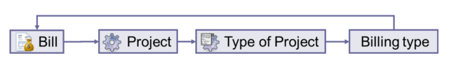
Schéma de facturation¶
Chaque facture est liée à un projet, un projet a un type de projet, et un type de projet est lié à un type de facturation.
Ainsi le type de facturation est automatiquement défini pour le projet sélectionné.
Le type de facturation influencera le format des lignes de facture.
À l’échéance¶
Un terme doit être défini pour générer la facture, généralement en suivant un calendrier de facturation.
Utilisé par exemple pour : les projets à prix fixe.
Sur le travail produit¶
Aucun terme n’est nécessaire.
La facturation sera calculée sur la base du travail produit par les ressources sur les activités sélectionnées et sur une période sélectionnée.
Utilisé par exemple pour les projets en régie.
Sur le travail produit plafonné¶
Aucun terme n’est nécessaire.
La facturation sera calculée sur la base du travail produit par les ressources sur les activités sélectionnées et sur une période sélectionnée.
En tenant compte du fait que la facturation totale ne peut pas dépasser le travail validé du projet.
Utilisé par exemple pour les projets en régie plafonnée.
Manuel¶
La facturation est définie manuellement, sans lien avec l’activité du projet.
Utilisé, par exemple pour tout type de projet où aucun lien avec l’activité n’est nécessaire.
Non facturé¶
Aucune facturation n’est possible pour ces types de projets.
Utilisé, par exemple pour les projets internes et les projets administratifs.
Avertissement
Rapport
Seules les factures avec au moins le statut « terminé » seront disponibles pour les rapports.
Avant ce statut, elles sont considérées comme un brouillon.
Lignes de facture¶
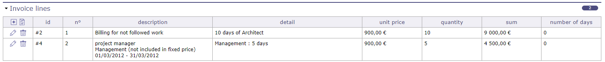
traitement des lignes de facture¶
La saisie pour chaque ligne de facture dépend du type de facturation.
Une boîte de dialogue « ligne de facture » différente sera affichée selon le type de facturation.
Cliquez sur
pour ajouter une ligne de facture.Cliquez sur pour ajouter une ligne formatée selon le type de facturation.
Cliquez sur
 pour modifier une ligne de facture existante.
pour modifier une ligne de facture existante.Cliquez sur
pour supprimer la ligne de facture.
{kind=link}
Ligne de facture « À l’échéance »¶
Les conditions de facturation client doivent être créées dans l’écran des conditions de facturation client pour être affichées dans la liste.
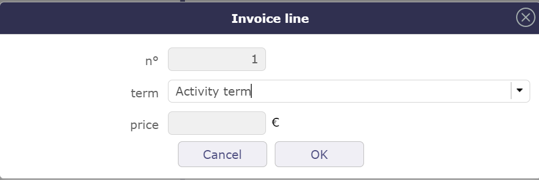
Ajouter une ligne à l’échéance¶
Peut être modifié lors de la mise à jour.
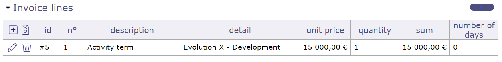
Ligne à l’échéance¶
Ligne de facture Sur le travail produit & Sur le travail produit plafonné¶
Sélectionnez la ressource dont vous souhaitez récupérer le travail et la période que vous souhaitez facturer
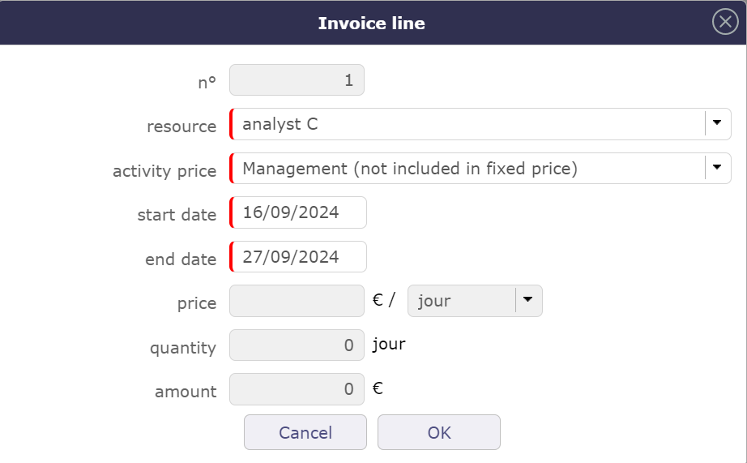
Fenêtre contextuelle d’insertion de ligne pour une ressource et sur une période donnée¶
Peut être modifié lors de la mise à jour.
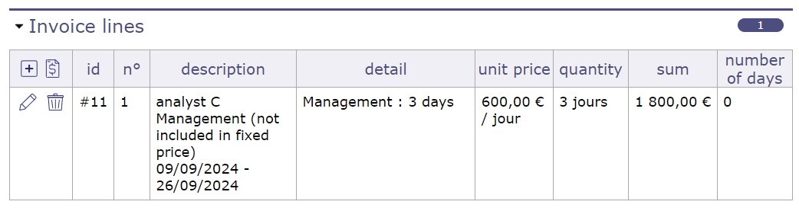
Récupération des informations de travail pour la ressource¶
Ligne de facture Facturation manuelle¶
Pour la facturation manuelle, vous pouvez sélectionner une ligne du catalogue si vous en avez créé un au préalable.
Le catalogue n’est pas obligatoire pour remplir une ligne
Décrivez au moins la ligne de facture et saisissez le prix.
L’unité à facturer est laissée au choix de l’utilisateur (jour, mois, pièce, lot, etc.)
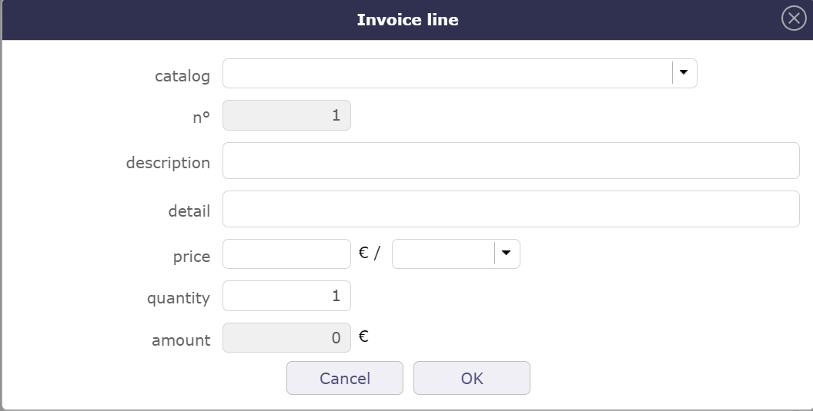
Facturation manuelle¶
Peut être modifié lors de la mise à jour.
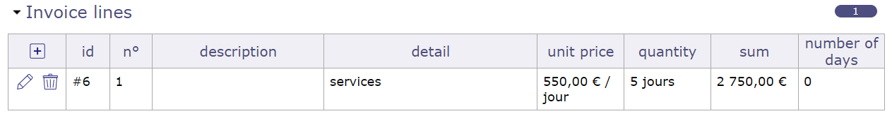
Ligne de facture pour la facturation manuelle¶
Paiements client¶
Permet de définir le paiement des factures.
La facture garde la trace du paiement.
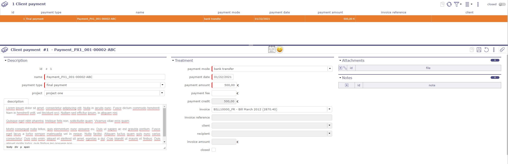
Paiement client¶
Prix des activités¶
Le prix d’activité définit le prix journalier pour les activités d’un type d’activité donné et d’un projet donné.
Cela est utilisé pour calculer un montant de facturation pour le type de facturation Sur le travail produit et Sur le travail produit plafonné.
Galerie financière¶
la galerie financière vous permet d’afficher sous forme de liste et par éléments, les différents devis clients, factures et commandes enregistrés dans ProjeQtOr, par date, client ou par type, facture partielle, finale et complète.
Les pièces jointes sont affichées groupées par élément.
Cliquez sur  pour afficher la liste des pièces jointes.
pour afficher la liste des pièces jointes.
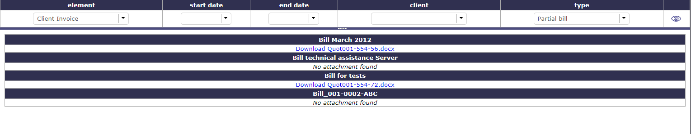
Galerie financière¶
Des filtres peuvent être appliqués à la liste.
Catalogue financier¶
Le catalogue définit les éléments (produits ou services) qui peuvent être l’objet d’un devis, d’une commande ou d’une facture.
Cela est utilisé sur les lignes de devis, les lignes de commande et les lignes de facture.
Voir aussi
Gestion du chiffre d’affaires¶
Vous pouvez gérer le chiffre d’affaires du projet à l’achèvement et sa cohérence avec les commandes et factures du projet.
Une section « Gestion du chiffre d’affaires » est visible sur l’écran des projets dans la section Avancement après activation du module « Gestion du chiffre d’affaires » sous la section financière.
Les informations suivantes sont alors accessibles :
Le chiffre d’affaires à l’achèvement correspond au montant total qui sera facturé pour ce projet.
Affichage de la somme des commandes client du projet
Affichage de la somme des factures client du projet
Méthode d’évaluation du chiffre d’affaires
Méthode d’évaluation du chiffre d’affaires
Le chiffre d’affaires est fixe, il est alors saisi manuellement
Le chiffre d’affaires est Variable dans le temps en fonction des activités, il sera calculé à partir du chiffre d’affaires de toutes les activités (non annulées) du projet et éventuellement des sous-projets. Dans ce cas, les activités auront également un champ de chiffre d’affaires à alimenter.
Les projets avec des sous-projets auront systématiquement un mode d’évaluation « Variable », ce mode consolidera automatiquement le chiffre d’affaires des sous-projets sur le projet parent.
Cohérence avec les commandes et factures du projet
Pour les projets avec des sous-projets, la somme des commandes et factures consolidera les données des sous-projets, c’est-à-dire qu’elle intégrera les commandes et factures des sous-projets en plus des commandes et factures éventuellement sur le projet lui-même.
La somme des commandes est en rouge si elle est inférieure au chiffre d’affaires. La somme des factures est en rouge si elle est supérieure au chiffre d’affaires.
Déclencher des alertes
Vous pouvez créer des alertes définissables pour les projets dans la section « indicateurs unitaires » :
Chiffre d’affaires supérieur à la somme des commandes
Chiffre d’affaires inférieur à la somme des factures
Afin d’intégrer cette évolution dans la version communautaire, sans perturber les utilisateurs qui n’ont pas besoin de cette fonctionnalité, nous conditionnerons le comportement :
Afin de transcrire l’utilisation actuelle du coût validé, un paramètre global déterminera si le chiffre d’affaires est automatiquement reporté comme coût validé sur les activités et les projets.
Note
Cette fonctionnalité n’est visible que si le module Gestion du chiffre d’affaires est activé via le menu des droits d’accès dans Gestion des modules.
La Gestion du chiffre d’affaires est un sous-module du module financier.
Ce nouveau module activera / désactivera la gestion des UO et tout ce qui est lié à la gestion des UO (voir ci-dessous).
Ce module sera désactivé par défaut.
Catalogue d’unités d’œuvre¶
Vous pouvez définir des catalogues d’unités d’œuvre, composés d’unités d’œuvre, elles-mêmes décomposées en plusieurs complexités.
Cette fonctionnalité ne sera accessible que si le module Gestion du chiffre d’affaires est activé.
Le concept de Projet sur le catalogue n’est pas essentiel, il est présent pour garantir la gestion des droits.
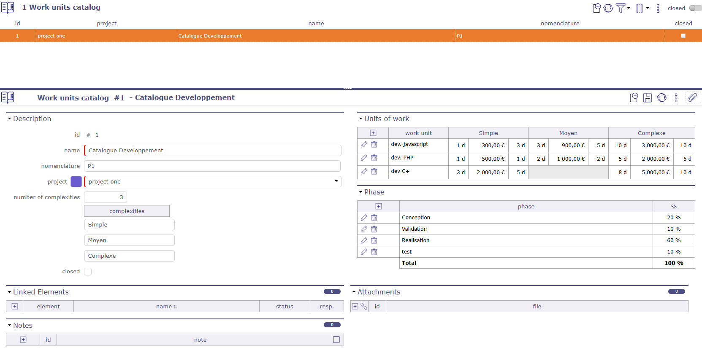
Écran du catalogue d’unités d’œuvre¶
Vous pouvez attribuer n’importe quel catalogue à un projet, quelle que soit sa position dans la structure, tout en maintenant la notion d’héritage sur les sous-projets.
Un champ « catalogue utilisé » sur l’écran des projets est disponible.
Les UO proposées sur les activités du projet seront systématiquement les UO de ce catalogue.
Lorsque le champ « catalogue utilisé » est renseigné (saisi ou modifié) pour un projet, tous les sous-projets (récursivement) qui avaient la même valeur de catalogue initiale (ou aucune valeur) se voient attribuer la nouvelle valeur de catalogue.
Le niveau de récursion s’arrête au premier projet qui ne respecte pas cette règle.
Lorsqu’un catalogue est créé ou modifié pour être attaché à un projet, le champ « catalogue utilisé » du projet est mis à jour, et la mise à jour est transmise aux sous-projets.
Important
Les droits de modification sont définis sur le catalogue en renseignant le champ projet.
Seuls les profils ayant le droit de modifier le projet et le catalogue pourront le modifier, quel que soit le projet sur lequel il est utilisé.
Créer un catalogue¶
Dans le menu Finance, section Recettes, écran Catalogue d’unités d’œuvre.
Cliquez sur
 pour créer un nouveau catalogue
pour créer un nouveau catalogue
Avertissement
Si le numéro de complexité n’est pas renseigné, vous ne pourrez pas ajouter de détails dans les unités d’ordre de travail.
Le nombre par défaut défini dans les paramètres globaux est appliqué.
Renseignez ensuite les champs avec le nom des complexités gérées par ce catalogue.
Cliquez sur pour ouvrir les fenêtres contextuelles et compléter les détails de complexité.
Vous pouvez renseigner les champs suivants pour chaque UO :
Référence
Description
Recettes
Livrable
date de validité
Les champs description, entrant et livrable sont des éditeurs de texte en mode inline. Les boutons d’édition apparaissent lorsque le curseur est dans le champ.
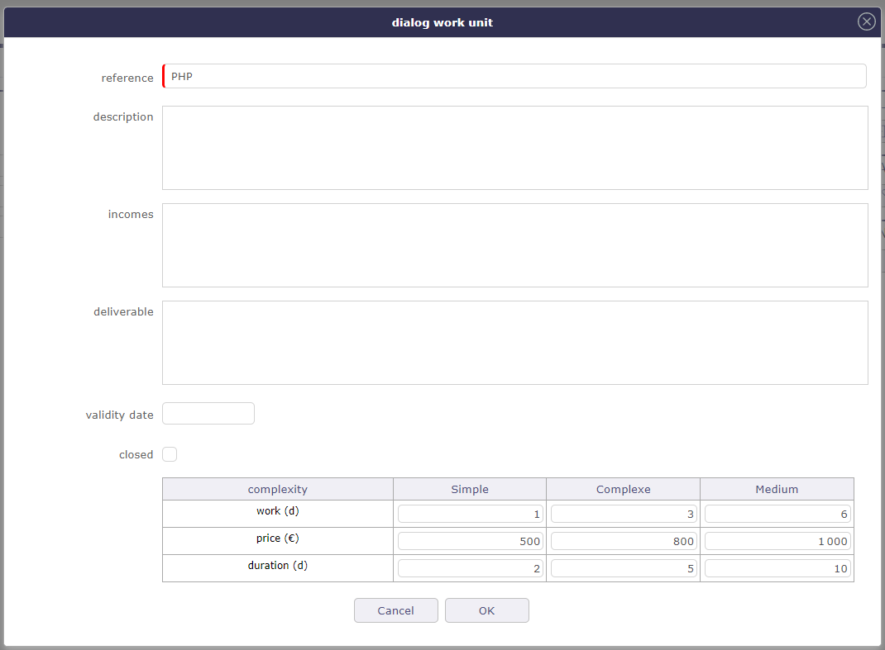
Fenêtre contextuelle des détails des complexités¶
Pour chaque complexité de l’UO, on peut définir :
Charge validée - 0 est autorisé
Prix (CA) de la complexité
Durée en jours ouvrés - optionnel
Il n’est pas obligatoire de renseigner toutes les complexités pour une UO.
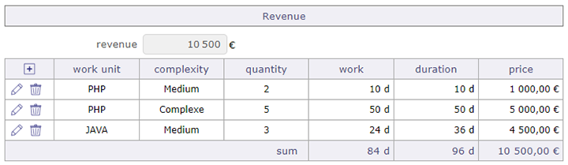
Section chiffre d’affaires sur l’écran de l’activité¶
Phasage¶
L’objectif est de pouvoir fournir la partie technique, la partie gestion de projet, la partie qualité par exemple sur les unités d’œuvre.
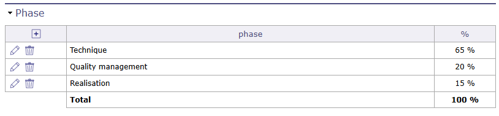
Phasage sur le catalogue d’unités d’œuvre¶
Vous pouvez saisir des pourcentages qui exprimeront % de la charge de l’UO au niveau du catalogue et non au niveau de l’UO.
Le phasage au niveau du catalogue évite une saisie pour chaque UO et chaque complexité d’UO.
Vous pouvez saisir autant de lignes que souhaité.
Utilisation d’un catalogue d’unités d’œuvre¶
Vous pouvez sélectionner une UO sur une activité, uniquement si le projet a un mode d’évaluation CA Variable.
Nous renseignerons l’UO, sa complexité et le nombre d’unités :
Saisie de l’UO dans la liste des UO du catalogue lié au projet. Cela remplira dynamiquement la liste des complexités d’UO en affichant uniquement celles qui ont une charge et un prix non nul mais pouvant être égal à zéro.
Saisie de la complexité
Saisie du nombre de quantité d’unités d’œuvre
Une activité ne sera associée qu’à un seul couple UO / Complexité.
Si l’UO est sélectionnée, la complexité et la quantité sont obligatoires, sinon elles sont interdites, c’est-à-dire non saisissables.
Les données UO / Complexité / Quantité permettront de valoriser :
La charge validée = charge de l’UO / Complexité x Quantité
Le chiffre d’affaires de l’activité = prix de l’UO / Complexité x Quantité
La durée validée = durée de l’UO / Complexité x Quantité
La saisie de la durée validée calculera automatiquement la date de fin validée si la date de début validée est saisie.
Note
Cela ne déterminera la durée planifiée de l’activité que si elle est en mode de planification « durée fixe ».
Sinon, le planning déterminera la durée planifiée à partir de la charge affectée et de la disponibilité des ressources affectées.
Ces 3 données (charge validée, durée validée, CA) passeront alors en lecture seule car elles sont calculées.
Si la date d’expiration de l’UO est dépassée, une alerte sera affichée sur l’activité, sans que cela bloque l’enregistrement de l’activité.
Si le paramètre global « Report du chiffre d’affaires sur le coût validé des activités » est activé, le chiffre d’affaires saisi ou saisi via l’UO est recopié dans le coût validé de l’activité.
Vous pouvez modifier le catalogue sur les données d’une UO, d’une Complexité ou d’une Quantité, cependant il n’est pas possible de modifier une unité d’œuvre du catalogue si elle est déjà utilisée sur une activité.
Si des ressources sont affectées, application de la variation de la charge affectée, proportionnellement à la charge affectée à chaque ressource et mise à jour du « reste à faire » en conséquence (sans jamais pouvoir devenir négatif).
Vous pouvez supprimer le catalogue sur les données d’une UO, d’une Complexité ou d’une Quantité, cependant il n’est pas possible de supprimer une unité d’œuvre du catalogue si elle est déjà utilisée sur une activité.
Astuce
Dans le cas d’une UO dont la complexité génère 5 jours de charge avec une quantité de 1.
si A est affecté pour 2 jours et B affecté pour 3 jours
si nous doublons la quantité (et donc la charge validée), A est alors affecté 4 jours et B est affecté 6 jours.
Ordres de travail¶
Les services commandés utilisent la fonctionnalité de catalogue d’unités d’œuvre.
Vous devez « activer les services commandés » dans les paramètres globaux
Les services peuvent être enregistrés directement sur les commandes client ou sur l’écran dédié aux ordres de travail.
Sur la commande client¶
Sur l’écran des commandes client, vous devez saisir le projet qui utilisera le catalogue.
Seul ce projet pourra utiliser ces unités d’œuvre.
Si le projet a des sous-projets, bien que le catalogue soit hérité, les unités d’œuvre ne seront accessibles qu’au projet lié à la commande.
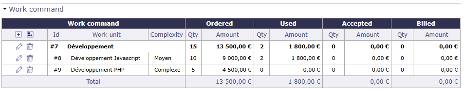
Travail de commande sur les activités¶
Cliquez sur pour ajouter une nouvelle UO.
Cliquez sur  pour ajouter une ligne mère pour l’UO.
pour ajouter une ligne mère pour l’UO.
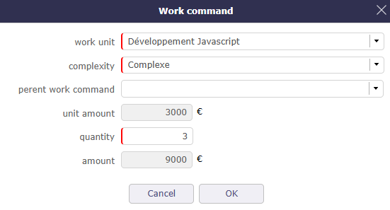
Ajouter une unité d’œuvre sur commande¶
Vous saisissez l’unité d’œuvre depuis le catalogue du projet lié à la commande que vous souhaitez utiliser.
Sa complexité ainsi que sa quantité.
Les champs de montant sont automatiquement calculés sur la base des informations du catalogue.
Facturation¶
Lors de la copie de votre commande vers une facture, le tableau des services commandés est également créé en tenant compte de la quantité déjà facturée.
La somme de la quantité totale facturée (y compris la quantité actuelle et déjà facturée) ne doit pas dépasser la quantité commandée.
La sélection d’un ordre de travail affiche l’unité d’œuvre, la complexité, la quantité unitaire et les quantités (stockées sur la ligne d’ordre de travail).
Le montant est calculé = quantité facturée x montant unitaire.
Lors de la mise à jour, la référence de l’ordre de travail ne peut pas être modifiée.
Lors de l’insertion/mise à jour de données, la somme des données sur l’ordre de travail est mise à jour.
Sur les activités¶
Lorsque vous avez une commande effective sur un projet d’activité, vous pouvez lier les UO commandées aux activités du même projet.
Les catalogues sont hérités, mais les UO ne sont accessibles qu’aux activités du projet lié à la commande.
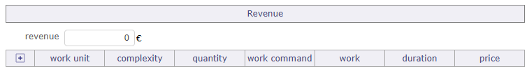
Ordre de travail sur les activités¶
Une fenêtre vous permet d’ajouter une UO depuis le catalogue lié au projet.
Si une commande existe pour cette UO (ou+complexité) sur ce projet, vous pouvez sélectionner la commande dans le champ correspondant.
Une fois liée, la commande suivra l’avancement des activités pour mettre à jour les Unités d’œuvre utilisées.
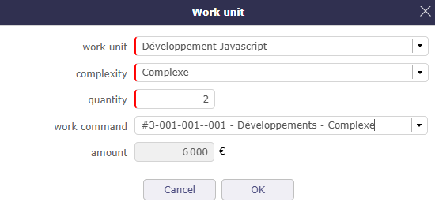
Ordre de travail sur les activités¶
Important
La quantité ne doit pas être inférieure à la quantité déjà facturée,
La quantité ne doit pas être inférieure à la quantité déjà réalisée
S’il y a une quantité réalisée ou facturée, l’unité d’œuvre et la complexité ne peuvent pas être modifiées
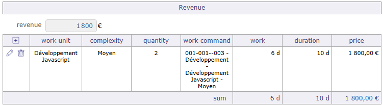
Ordre de travail sur les activités¶
Lorsqu’une activité est liée à une UO de la commande, le tableau des UO de la commande est mis à jour pour indiquer le nombre d’UO utilisées sur votre activité.
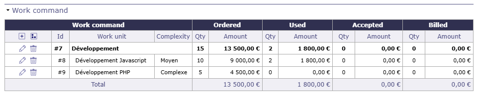
UO mise à jour dans le tableau de commande client¶
Sur l’écran de l’ordre de travail¶
Cet écran vous permet de voir toutes les unités d’œuvre commandées, tous projets et catalogues confondus.
Un écran dédié vous permet de traiter les unités d’œuvre commandées comme un élément séparé et de bénéficier des fonctions de filtre.
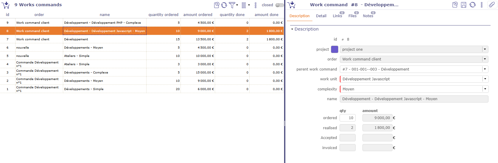
Ordre de travail sur les activités¶
Vous trouverez les mêmes informations que sur votre commande client mais de manière généralisée.
Acceptation¶
Les services acceptés sont liés aux services commandés.
Il s’agit d’intégrer le concept d’Acceptation Client. L’objectif est de pouvoir les définir et les suivre en termes de dates et de contenu.
Cliquez sur pour créer une nouvelle acceptation.
Dans l’onglet détail, cliquez sur pour ajouter les unités d’œuvre pertinentes de votre commande.
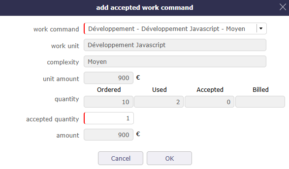
Acceptation sur UO¶
La colonne acceptée actuelle est renseignée.
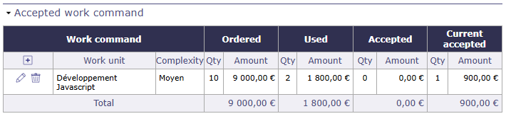
Accepté actuel¶
Dans l’onglet Avancement, saisissez la date d’acceptation client pour que la colonne acceptée soit affichée.
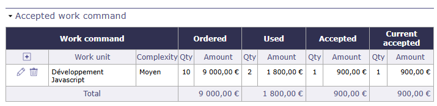
Accepté¶
Sur la commande client, vous trouvez la consolidation de l’acceptation des UO.
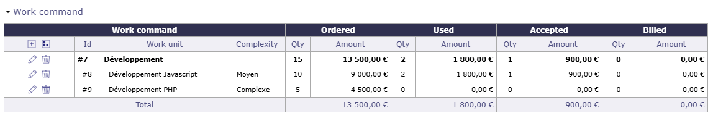
UO acceptée sur la commande client¶
Contrat client¶
ProjeQtOr vous donne la possibilité de gérer et surveiller précisément vos contrats clients.
Le contrat client est nécessairement lié à un client.
Une vue diagramme de Gantt est disponible pour visualiser vos contrats graphiquement.
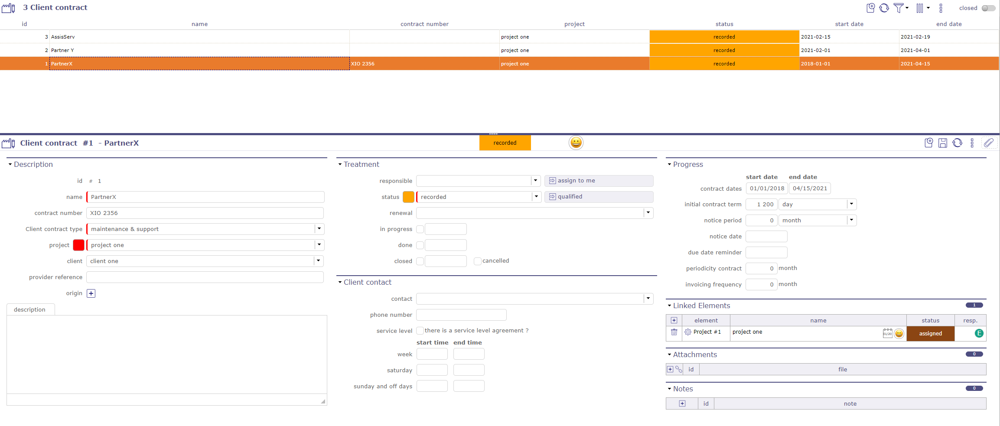
Écran du contrat client¶
Traitement¶
Suivez l’état, l’avancement de votre contrat dans cette section.
Responsable
Choisissez un responsable
Ses initiales sont affichées sur le diagramme de Gantt des contrats
Workflow
Le workflow est basé sur le workflow par défaut.
Vous pouvez modifier le workflow actuel.
Voir aussi
Renouvellement
Définit le comportement du renouvellement d’un contrat à la fin de la durée initialement prévue
Jamais : le contrat ne sera jamais renouvelé
Tacite : le contrat sera renouvelé s’il n’y a pas de résiliation
Express : le contrat est renouvelé et fait l’objet d’un acte écrit ou verbal
États
En cours : Date à laquelle le contrat est pris en charge. Effectif. Cette date peut être saisie manuellement ou en passant à l’état Affecté du workflow
Terminé : Date à laquelle le contrat se termine.
Clos : Date à laquelle le contrat a été clôturé.
Annulé : Date d’annulation
Diagramme de Gantt du contrat client¶
En plus de l’écran de gestion des contrats (zone liste et détails), vous pouvez visualiser vos contrats dans une vue temporelle sur un diagramme de Gantt. C’est le « calendrier des contrats clients »
Chaque barre représente les différents contrats, allant de la date de début à la date de fin du contrat.
Les dates de préavis et les dates d’échéance sont affichées comme des jalons.
Les barres Gantt des contrats clients deviennent rouges lorsque la date d’échéance est supérieure à la date de fin du contrat.
Aucun calcul n’est effectué. C’est une indication pour montrer une incohérence.
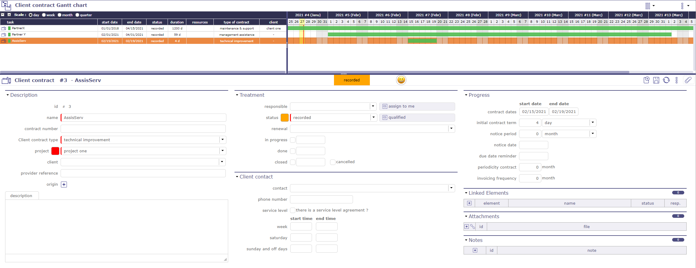
Écran du diagramme de Gantt du contrat client¶